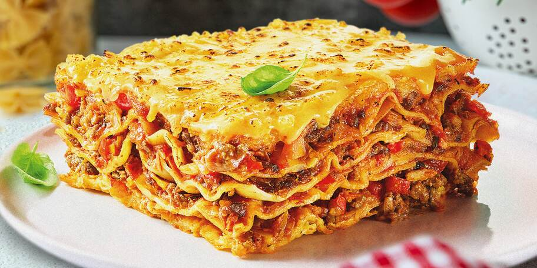

Home
Document
Lasagna

Lasagne jsou oblíbeným jídlem zvláště u dětí a mládeže. Nezaberou nám mnoho času, protože finální příprava se děje v troubě bez naší asistence. Výsledek stojí za to. Skvělý pokrm je dobrou volbou i k nedělnímu obědu.
Suroviny
Masová směs:
- 1 velká cibule
- 2 stroužky česneku
- 400g mletého hovězího masa (nebo směs)
- olej
- oregano
- bazalka
- grilovací koření
- sůl
- mletý pepř
- kečup
- 1 plechovka loupaných rajčat
Bešamel:
- 50g másla
- 50g hladké mouky
- 500ml mléka
- 1 špetka muškátového oříšku
- sůl
- mletý pepř
- tvrdý sýr
- Připravíme masovou směs: na oleji osmažíme najemno nakrájenou cibuli a česnek nakrájený na plátky do zlatohněda.
- Poté přidáme mleté maso a za stálého míchání a oddělování kousků od sebe ho necháme zatáhnout. Maso osolíme a okořeníme, přidáme kečup.
- Kořeníme hodně, abychom dosáhli výrazné chuti. Smažíme, dokud maso není hotové. Pak přidáme rajčata z plechovky, krátce povaříme, případně dochutíme.
- Na bešamel rozpustíme máslo, přidáme hladkou mouku a uděláme jíšku.
- Když je jíška osmažená, přilijeme mléko, přidáme muškátový oříšek, sůl a mletý pepř. Vaříme za stálého míchání do zhoustnutí (konzistence asi jako pudink).
- Zapékací mísu vyložíme pečicím papírem. Tvrdý sýr nastrouháme najemno.
- Začneme vrstvit lasagne do zapékací nádoby. Položíme vrstvu lasagní, na ně navrstvíme část masové směsi a vrstvu bešamelu, poté opět těstoviny a postup opakujeme do spotřebování surovin.
- Poslední vrstvou by mělo být maso a bešamel, který posypeme strouhaným sýrem. Pečeme při 180 °C asi 45 minut.